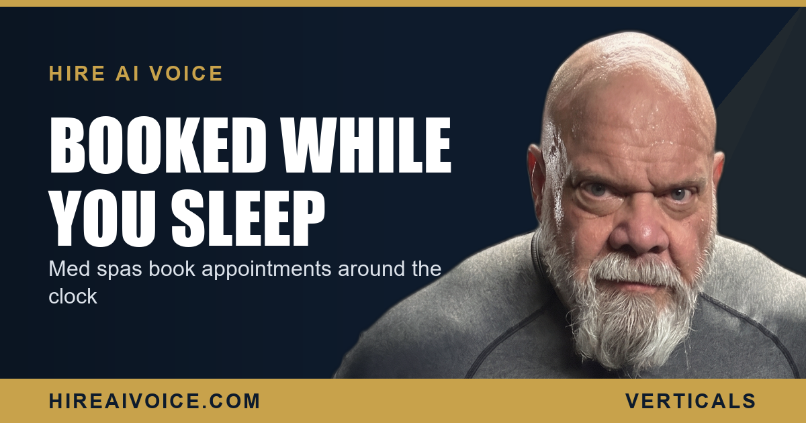

Med Spas: Booking Appointments While You Sleep

The Short Version
- Med spas lose bookings every time a call goes unanswered during a treatment or after the front desk goes home.
- Aesthetic clients book on impulse, often at night. If no one answers, they book with the next med spa that does.
- A 24/7 AI receptionist answers every call, books consultations and treatments, and handles service and pricing questions on the spot.
- It fills your calendar overnight, so you walk in to a fuller schedule instead of a voicemail box full of lost clients.
Why Do Med Spas Lose Bookings to Missed Calls?
Because your staff is in the treatment rooms, not at the phone. When your injector is mid-appointment, your aesthetician is finishing a facial, and the front desk is checking a client out, the phone still rings. It rolls to voicemail. The caller, who picked up the phone ready to book, hangs up and dials the next med spa on the list. You never even knew the booking existed.
Here is the part that stings for any med spa in Santa Clarita or Los Angeles County: that client was not shopping on price. They had already decided to spend money on themselves. They just needed someone to answer and put them on the calendar. The job was lost on a phone nobody could pick up.
Why Do Aesthetic Clients Book on Impulse?
Because the decision to book a treatment is emotional, and emotion fades fast. Someone sees a result on Instagram, catches their reflection in a bad light, or finally decides this is the month they do something about it. In that window they are ready. They look up a med spa and they call. If they reach a person, they book. If they reach voicemail, the impulse cools and the moment is gone, often for good.
Notice when those impulse calls land. Not at 11 AM when your front desk is staffed. They land at 9 PM after the kids are down, on a Sunday afternoon, on a lunch break. They land exactly when no one is there to answer.
How Does an AI Receptionist Book Med Spa Appointments?
An AI voice agent answers the call the instant it rings, then books the consultation or treatment straight onto your calendar. It greets the caller by your spa's name, asks what they are interested in, checks your availability, and locks in the appointment in real time. New bookings, reschedules, follow-up calls, it handles them the way a trained front-desk receptionist would, except it never steps into a treatment room and never goes to lunch.
You did not lose the client on results or price. You lost them to a voicemail at 9 PM.
This is the whole point of an AI receptionist that never sleeps. The client deciding at 9 PM to finally book that consultation does not hit your voicemail. They get a warm conversation and a confirmed appointment, while your competitor's phone rings into the dark.
Can It Answer Service and Pricing Questions?
Yes. The AI voice agent is trained on your menu of services, your pricing, and the questions you hear all day. A caller can ask what a treatment involves, roughly what it costs, and what to expect, and the agent answers, then moves them straight to booking. It clears the routine questions that tie up your front desk, while routing anything genuinely clinical to a human on your team. The caller feels handled, not screened.
For a deeper look at how 24/7 answering works across any appointment-based business, see how an AI receptionist covers your phone around the clock. The mechanics are the same whether you run a med spa, a clinic, or any practice that lives and dies by its booked calendar.
What Does Booking Overnight Actually Do for the Calendar?
It turns your dead hours into booked hours. Every call that used to die in voicemail at night or on the weekend now becomes a confirmed appointment. You are not adding ad spend. You are capturing the demand you already paid to create and were quietly leaking. The same dynamic plays out in other appointment-driven practices, like dental offices across LA County that stop missing new-patient calls. The phone keeps working after the staff goes home.
Run the math on your own spa. Even one missed consultation a night, at med spa treatment prices, adds up to real money walking out the door every single week. That leak is invisible because you never see the calls you miss. A 24/7 AI receptionist closes it.
What Should a Med Spa Do This Week?
You do not need a bigger marketing budget. You need to stop leaking the bookings you already earned. Three moves:
1. Track your missed calls. For one week, count how many calls hit voicemail, especially after hours. The number is your hidden revenue leak, and it will surprise you.
2. Put a 24/7 answer in place. An AI voice agent that answers every call, handles the common questions, and books the appointment turns your worst hours into booked ones.
3. Let it run overnight. The after-hours impulse calls are the ones you are losing now. Capture them, and you walk in to a fuller calendar.
The med spas winning in Santa Clarita and LA County are not the ones with the flashiest ads. They are the ones who answer when the client is ready to book. Answer first, and the calendar fills itself.
Fill Your Calendar While You Sleep
Our AI voice agent answers every call 24/7, books the consultation, and follows up automatically. Live in 72 hours. $297/month, no contracts. Or call Sarah, our live agent, and hear it yourself.